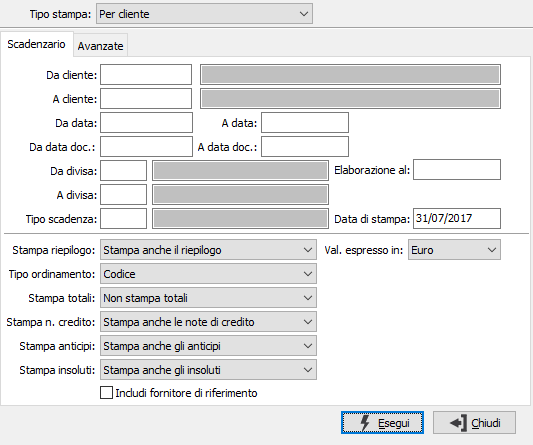
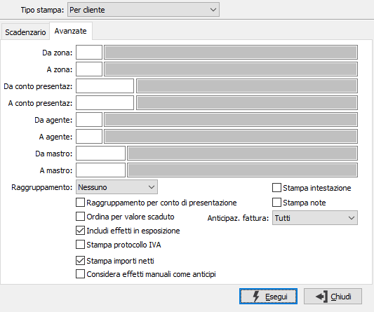
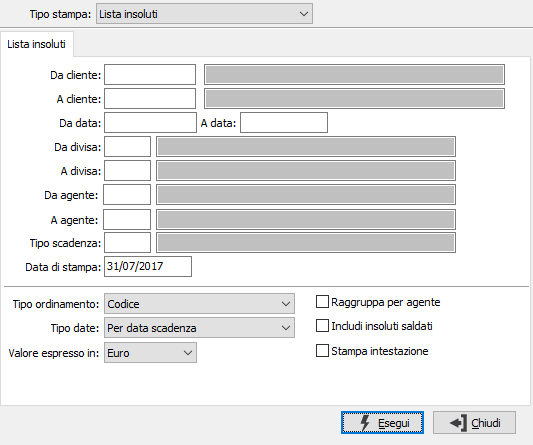

Stampa scadenzario clienti
I programmi, provvedono alla stampa di scadenzari attivi per clienti, per divisa, riepiloghi generali, liste insoluti e per giorni medi assumendo informazioni dalle tabelle Movimenti scadenze. Le finestre video di input sono parametrizzate e si modificano in funzione del tipo di stampa prescelto.
TIPO STAMPA: check box per definire il tipo di stampa da effettuare. Valori ammessi: Scadenzario per cliente; Scadenzario per divisa; Riepilogo generale; Lista insoluti; Per giorni medi.
Lo scadenzario per giorni medi effettua il calcolo dei giorni medi di incasso al fine di raffrontare i tempi teorici ed i tempi effetti di incasso.
Tipi stampa per cliente, per divisa e giorni medi

DA CLIENTE: indicare il codice del cliente da cui si intende iniziare la stampa dello scadenzario; confermando a vuoto la stampa inizia dal primo codice valido. Sul campo è attiva la funzione di ricerca (F9).
A CLIENTE: indicare il codice del cliente con cui si intende far terminare la stampa dello scadenzario; se si conferma a vuoto la stampa termina con l'ultimo codice valido. Sul campo è attiva la funzione di ricerca (F9).
DA DATA: indicare la data di scadenza da cui si vuole iniziare la lettura dei movimenti. Confermando a vuoto la stampa inizia con il primo movimento valido presente sulla tabella movimenti contabili per il primo conto selezionato.
A DATA: indicare la data di scadenza con cui si vuole terminare la lettura dei movimenti. Confermando a vuoto la stampa termina con l’ultimo movimento valido presente sulla tabella movimenti contabili per l'ultimo conto selezionato.
DA DATA DOC.: indicare la data documento da cui si vuole iniziare la lettura dei movimenti. Confermando a vuoto la stampa inizia con il primo movimento valido presente sulla tabella movimenti contabili per il primo conto selezionato.
A DATA DOC.: indicare la data documento con cui si vuole terminare la lettura dei movimenti. Confermando a vuoto la stampa termina con l’ultimo movimento valido presente sulla tabella movimenti contabili per l'ultimo conto selezionato.
DA DIVISA: indicare il codice della prima divisa di cui vogliono stampare le scadenze. Confermando a vuoto la selezione inizia con la prima divisa valida. Sul campo è attiva la funzione di ricerca (F9).
A DIVISA: indicare il codice dell’ultima divisa di cui vogliono stampare le scadenze. Confermando a vuoto la selezione termina con l’ultima divisa valida. Sul campo è attiva la funzione di ricerca (F9).
TIPO SCADENZA: indicare la tipologia di pagamento di cui si vuole stampare lo scadenzario.
ELABORAZIONE AL: consente di stampare lo scadenzario in essere alla data specificata.
DATA DI STAMPA: indicare la data in cui viene stampato lo scadenzario (viene proposta la data di sistema, modificabile).
STAMPA RIEPILOGO: combo box per determinare le modalità di stampa del riepilogo finale. Valori ammessi: Non stampa il riepilogo; Stampa anche il riepilogo
TIPO ORDINAMENTO: combo box per determinare il tipo di ordinamento. Valori ammessi: Codice; Ragione sociale
STAMPA TOTALI: combo box per determinare le modalità di stampa dei totali. Valori ammessi: Non stampa i totali; Stampa i totali per data scadenza; Stampa i totali per mese
STAMPA NOTE DI CREDITO: check box significativo nel caso in cui si stampi lo scadenzario delle rimesse dirette; permette di selezionare in stampa anche le note di credito. Valori ammessi: Non stampa le note di credito; Stampa anche le note di credito; Stampa solo le note di credito
STAMPA ANTICIPI: check box significativo nel caso in cui si stampi lo scadenzario delle rimesse dirette; permette di selezionare in stampa anche gli anticipi. Valori ammessi: Non stampa gli anticipi; Stampa anche gli anticipi; Stampa solo gli anticipi
STAMPA INSOLUTI: check box significativo nel caso in cui si stampi lo scadenzario delle rimesse dirette; permette di selezionare in stampa anche gli insoluti. Valori ammessi: Non stampa gli insoluti; Stampa anche gli insoluti; Stampa solo gli insoluti.
INCLUDI FORNITORE DI RIFERIMENTO: se spuntato include le partite del fornitore di riferimento, se presente; tali partite saranno evidenziate in corsivo in stampa.
VALORI ESPRESSI IN: definisce la moneta di conto in cui verranno visualizzati i controvalori.
Avanzate

DA ZONA: indicare il codice della zona da cui si intende iniziare la stampa dello scadenzario; confermando a vuoto la stampa inizia dal primo codice valido. Sul campo è attiva la funzione di ricerca (F9).
A ZONA: indicare il codice della zona con cui si intende far terminare la stampa dello scadenzario; se si conferma a vuoto la stampa termina con l'ultimo codice valido. Sul campo è attiva la funzione di ricerca (F9).
DA CONTO PRESENTAZIONE: indicare il codice del conto di presentazione da cui si intende iniziare la stampa dello scadenzario; confermando a vuoto la stampa inizia dal primo codice valido. Sul campo è attiva la funzione di ricerca (F9).
A CONTO PRESENTAZIONE: indicare il codice del conto di presentazione con cui si intende far terminare la stampa dello scadenzario; se si conferma a vuoto la stampa termina con l'ultimo codice valido. Sul campo è attiva la funzione di ricerca (F9).
DA AGENTE: indicare il codice dell'agente da cui si intende iniziare la stampa dello scadenzario; confermando a vuoto la stampa inizia dal primo codice valido. Sul campo è attiva la funzione di ricerca (F9).
A AGENTE: indicare il codice dell'agente con cui si intende far terminare la stampa dello scadenzario; se si conferma a vuoto la stampa termina con l'ultimo codice valido. Sul campo è attiva la funzione di ricerca (F9).
DA MASTRO: indicare il codice del mastro da cui si intende iniziare la stampa dello scadenzario; confermando a vuoto la stampa inizia dal primo codice valido. Sul campo è attiva la funzione di ricerca (F9).
A MASTRO: indicare il codice del mastro con cui si intende far terminare la stampa dello scadenzario; se si conferma a vuoto la stampa termina con l'ultimo codice valido. Sul campo è attiva la funzione di ricerca (F9).
RAGGRUPPAMENTO: definisce quale raggruppamento deve essere eseguito in stampa. Valori ammessi: Nessuno, Agente, Zona, Agente/Zona. Questa opzione è presente solo nella stampa per cliente.
RAGGRUPPAMENTO PER CONTO DI PRESENTAZIONE: selezionando questa opzione la stampa sarà raggruppata ed ordinata per conto di presentazione.
ORDINA PER VALORE SCADUTO: effettua l'ordinamento decrescente dei dati in base calcolo dei giorni di scaduto per l'importo scoperto (casella con segno di spunta).
INCLUDI EFFETTI IN ESPOSIZIONE: definisce se stampare sullo scadenzario anche gli effetti in esposizione (casella con segno di spunta) oppure no (casella vuota).
STAMPA PROTOCOLLO IVA: definisce se aggiungere alla stampa anche il protocollo IVA (casella con segno di spunta).
STAMPA IMPORTI NETTI: valido per le fatture emesse con ritenuta d’acconto, se spuntato presenta il valore netto delle ritenute.
CONSIDERA EFFETTI MANUALI COME ANTICIPI: se spuntato consente di trattare gli effetti emessi manualmente in via anticipata come se fossero anticipi (visibili quindi fino a che non completamente assegnati)
STAMPA INTESTAZIONE: indica se deve essere stampata come prima pagina del report una pagina contenente tutte le informazioni inerenti i criteri di selezione specificati per il report stesso (casella con segno di spunta).
STAMPA NOTE: indica se deve essere stampato il contenuto del campo note presente sulle scadenze.
se presente il modulo Anticipi fatture clienti, sarà presente anche il parametro "Anticipaz. fatture", che definisce lo stato della scadenza. I valori disponibili sono:
Tutti: non sarà applicato alcun filtro di selezione
Non gestito: la scadenza non è interessata dalla gestione anticipi fatture clienti.
Elaborato: la rata fa parte di una distinta di anticipazione provvisoria..
Richiesto: la rata fa parte di una distinta di anticipazione stampata in definitivo.
Concesso: la banca ha accettato la richiesta e concesso l'anticipo per la rata.
Respinto: la banca ha respinto la richiesta di anticipazione.
Tipo stampa Riepilogo generale
DA DATA: indicare la data di scadenza da cui si vuole iniziare la lettura dei movimenti. Confermando a vuoto la stampa inizia con il primo movimento valido presente sulla tabella movimenti contabili per il primo conto selezionato.
A DATA: indicare la data di scadenza con cui si vuole terminare la lettura dei movimenti. Confermando a vuoto la stampa termina con l’ultimo movimento valido presente sulla tabella movimenti contabili per l'ultimo conto selezionato.
DA DIVISA: indicare il codice della prima divisa di cui vogliono stampate le scadenze. Confermando a vuoto la selezione inizia con la prima divisa valida. Sul campo è attiva la funzione di ricerca (F9).
A DIVISA: indicare il codice dell’ultima divisa di cui vogliono stampate le scadenze. Confermando a vuoto la selezione termina con l’ultima divisa valida. Sul campo è attiva la funzione di ricerca (F9).
DATA DI STAMPA: indicare la data in cui viene stampato il riepilogo (viene proposta la data di sistema, modificabile).
PERIODO DI STAMPA: il programma produce un prospetto a colonne, e ciascuna colonna raggruppa i crediti di un determinato periodo in giorni. In questo campo deve essere indicato appunto il numero di giorni che compongono tale periodo.
STAMPA SCADUTO: check box per definire se stampare o meno i crediti scaduti. Valori ammessi: vuoto = non stampa i crediti scaduti; spunta = stampa anche i crediti scaduti.
VALORI ESPRESSI IN: definisce la moneta di conto in cui verranno visualizzati i controvalori.
STAMPA INTESTAZIONE: indica se deve essere stampata come prima pagina del report una pagina contenente tutte le informazioni inerenti i criteri di selezione specificati per il report stesso (casella con segno di spunta).
Tipo stampa Lista insoluti

DA CLIENTE: indicare il codice del cliente da cui si intende iniziare la stampa della lista insoluti; confermando a vuoto la stampa inizia dal primo codice valido. Sul campo è attiva la funzione di ricerca (F9).
A CLIENTE: indicare il codice del cliente con cui si intende far terminare la stampa della lista insoluti; se si conferma a vuoto la stampa termina con l'ultimo codice valido. Sul campo è attiva la funzione di ricerca (F9).
DA DATA: indicare la data di scadenza da cui si vuole iniziare la lettura dei movimenti. Confermando a vuoto la stampa inizia con il primo movimento valido presente sulla tabella movimenti contabili per il primo conto selezionato.
A DATA: indicare la data di scadenza con cui si vuole terminare la lettura dei movimenti. Confermando a vuoto la stampa termina con l’ultimo movimento valido presente sulla tabella movimenti contabili per l'ultimo conto selezionato.
DA DIVISA: indicare il codice della prima divisa di cui vogliono stampate gli insoluti. Confermando a vuoto la selezione inizia con la prima divisa valida. Sul campo è attiva la funzione di ricerca (F9).
A DIVISA: indicare il codice dell’ultima divisa di cui vogliono stampate gli insoluti. Confermando a vuoto la selezione termina con l’ultima divisa valida. Sul campo è attiva la funzione di ricerca (F9).
TIPO SCADENZA: indicare la tipologia di pagamento di cui si vogliono stampare gli insoluti.
DATA DI STAMPA: indicare la data in cui viene stampato la lista (viene proposta la data di sistema, modificabile).
TIPO ORDINAMENTO: combo box per determinare il tipo di ordinamento. Valori ammessi: Codice; Ragione sociale
TIPO DATA: combo box per determinare il tipo di ordinamento in base alla data. Valori ammessi: Per data scadenza; Per data registrazione
INCLUDI INSOLUTI SALDATI: check box per definire se inserire o meno nella lista anche gli insoluti saldati. Valori ammessi: vuoto = no; spunta = sì.
VALORI ESPRESSI IN: definisce la moneta di conto in cui verranno visualizzati i controvalori.
STAMPA INTESTAZIONE: indica se deve essere stampata come prima pagina del report una pagina contenente tutte le informazioni inerenti i criteri di selezione specificati per il report stesso (casella con segno di spunta).